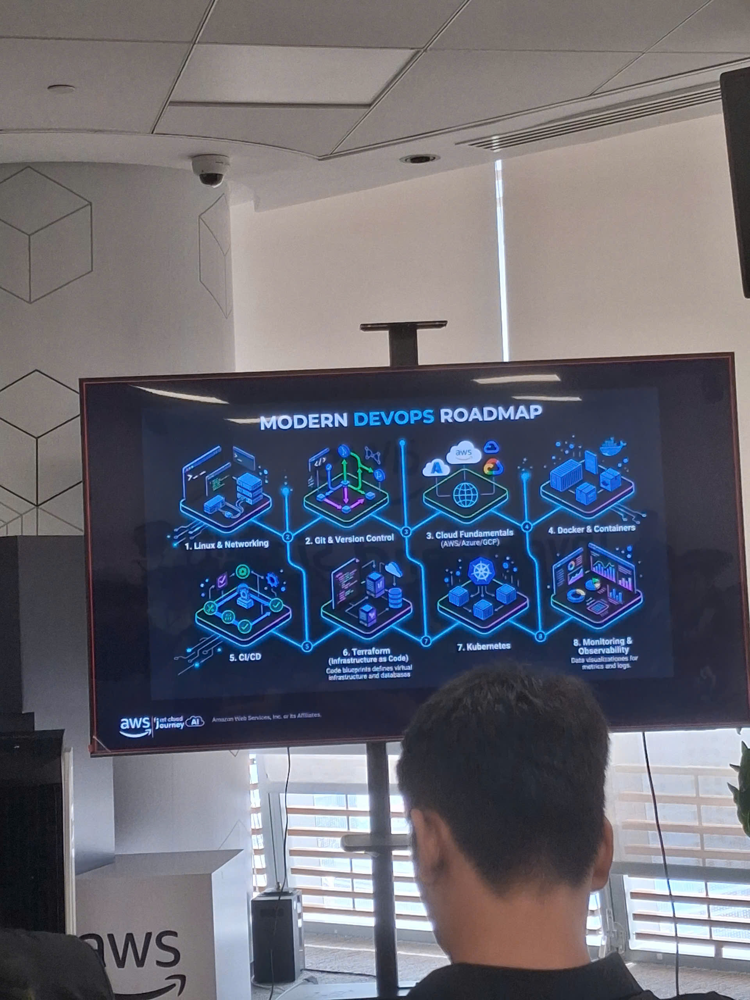
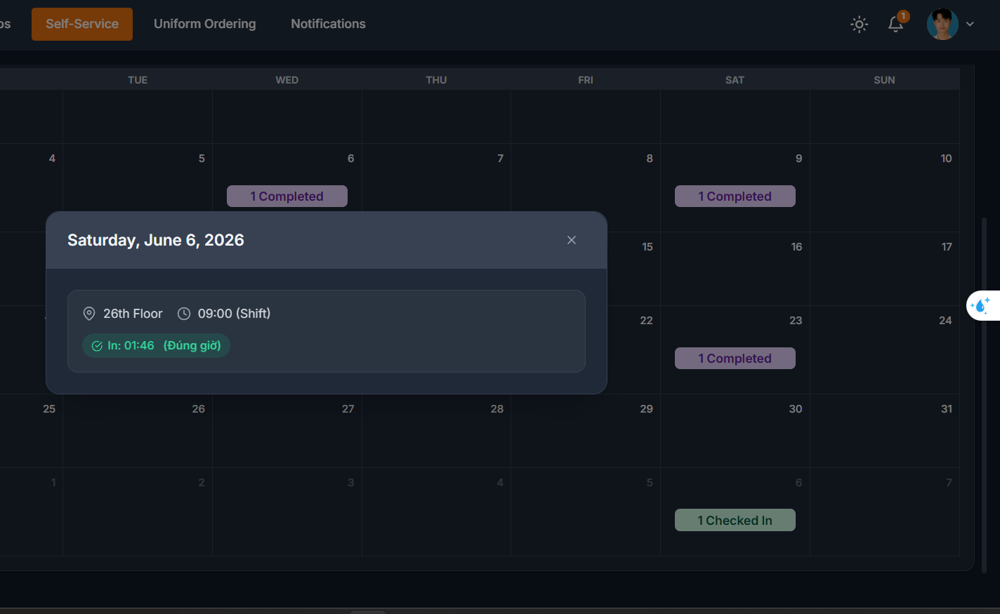

Event 3
Event Content
The third Community Day featured five sharing sessions covering real-time game development on AWS, Docker containerization, GraphRAG for LLMs, AWS WAF with machine learning, and a career journey from IT helpdesk to Senior Sysadmin.
Session 1 – Rock-Paper-Scissors Multiplayer Game on AWS (Speaker: Bạn Bảo)
Bạn Bảo demonstrated a real-time multiplayer Rock-Paper-Scissors game built with the Godot engine using WebSocket connections on AWS infrastructure:
Architecture
- AWS Lambda Functions for serverless backend logic
- Amazon DynamoDB for state management
- WebSocket API for real-time bidirectional communication
Game State Management on DynamoDB
The game handles multiple player states stored in DynamoDB:
Connected — player is onlineDisconnected — player has leftFinding Match — player is looking for an opponentChoice — player has made their move
How It Works
- The Godot client processes user input and sends requests to the server via WebSocket.
- The Lambda backend handles matchmaking, game logic, and result determination.
- Demo: Two clients connected simultaneously, and DynamoDB displayed both player IDs with a
matched status.
3 Key Lessons Learned
- DynamoDB Scan is expensive at scale — scanning with 1,000+ concurrent players doesn’t guarantee speed; traffic and costs increase significantly.
- Lambda is stateless — each invocation is independent, so game state must be persisted externally (DynamoDB).
- Handle unexpected disconnects gracefully — players may disconnect mid-game; the system must detect and clean up orphaned sessions.
Recommendation
- Mentioned AWS GameLift as a managed service purpose-built for multiplayer game server hosting at scale.
Session 2 – Docker: A Containerization Technology (Speaker: Bạn Bảo)
Bạn Bảo introduced Docker and containerization concepts:
- Virtual Machines (VMs): What they are and their benefits — full OS isolation but heavy resource usage.
- Containers & Docker: “Build once, run anywhere.” Containers share the host OS kernel, making them lightweight.
- Efficiency example: Run 10 containers on 5 EC2 instances instead of needing 10 separate EC2 instances.
- Demo: Built and ran a basic application using
docker build deployed across 2 EC2 machines.
Session 3 – GraphRAG: Graph-enhanced Retrieval-Augmented Generation (Speaker: Bạn Phát)
Bạn Phát presented GraphRAG as an evolution beyond traditional RAG:
What is RAG?
- Retrieval-Augmented Generation — fetching relevant documents to provide context for LLM responses.
- Limitations that make traditional RAG fall short: lack of relationship awareness between entities, difficulty with multi-hop reasoning.
Why GraphRAG?
- GraphRAG understands relationship awareness between entities, providing more coherent and understandable context for LLMs.
- Captures connections between concepts that flat document retrieval misses.
Implementation Approaches
| Approach |
Description |
| Fully Managed |
Amazon Bedrock as the engine managing everything; Amazon Neptune stores and manages all the graph data Bedrock generates |
| Custom Route |
Bedrock serves as the interface to call models; Foundation Models (FM) are handled by AWS; custom processing pipelines are built separately |
Session 4 – AWS WAF + Machine Learning for Network Intrusion Detection (Speaker: Bạn Đại)
Bạn Đại presented a hybrid approach combining AWS WAF with ML for attack detection:
- AWS WAF limitations: Rule-based detection alone cannot catch all sophisticated attack patterns.
- Solution: Combine WAF with Machine Learning models to detect network intrusions (NIDS — Network Intrusion Detection System).
- Data preprocessing challenges: Handling overfitting when training ML models on network traffic data.
- Dataset used: CES-CICIDS2018 — a benchmark dataset for evaluating intrusion detection systems.
Session 5 – From IT Helpdesk to Senior Sysadmin (Speaker: Anh Vinh)
Anh Vinh shared his career journey and practical interview advice:
Career Path
- Started as IT Helpdesk → grew into System Administrator (responsible for OS management and 24/7 system uptime).
- Real incident: Experienced a system crash caused by telesale users overwhelming the system. Hardware failure (disk crash) required quick action — shut down non-essential services and migrated data to a cloud server so the business could continue operating.
- This experience triggered his transition to Cloud/DevOps Engineer.
Interview Preparation Tips
- Study knowledge following a structured roadmap
- Prepare a polished CV
- Research the position and company on LinkedIn before the interview
Interview Reality: 30% Technical, 70% Systems Thinking
- Example question: “If an e-commerce platform reports a feature bug, how do you troubleshoot?”
- Start debugging from the user side → trace to the service/backend → describe findings to managers → check logs → if nothing found, investigate the database.
- Example question: “If you have an e-commerce product page, how do you deploy it to production? What infrastructure does the system need?”
Key Advice
- Build end-to-end projects to develop systems thinking and incident response skills.
- Interviewers value your problem-solving mindset more than memorized technical answers.
Lessons Learned & Personal Takeaways
- Serverless game development is viable but has trade-offs: DynamoDB scan costs and Lambda’s stateless nature require careful architecture decisions for real-time multiplayer games.
- Containers dramatically improve resource efficiency: Docker enables running multiple services on fewer instances, reducing infrastructure costs.
- GraphRAG > traditional RAG: Adding relationship awareness through graph structures produces significantly better LLM context for complex queries.
- Defense in depth: Combining rule-based WAF with ML-based intrusion detection creates a more robust security posture.
- Systems thinking over memorization: Real-world interviews and jobs require the ability to trace issues end-to-end and think holistically about infrastructure.
Event Photos

